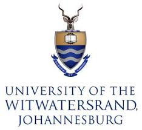
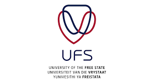
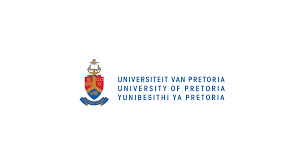

Explore Universities
To Apply for NSFAS Visit Website
CAO

Central Applications Office (CAO)
CAO is the platform to apply
- UNIVERSITY OF KWAZULU-NATAL
- DURBAN UNIVERSITY OF TECHNOLOGY
- MANGOSUTHU UNIVERSITY OF TECHNOLOGY
- UNIVERSITY OF ZULULAND
CAO handbook - Click ME!!
Visit Website (Apply)Fee: R250
(R300 for international applicants)Late Application Fee: R470
(late application: R580 for international applicants)University of Johannesburg (UJ)

Located in Johannesburg,Gauteng.
Known as the leading Forth Industrial Revolution in South Africa.
Top National Ranking in Engineering, Computer Science, and Business and Economics
UJ-Prospectus book - Click ME!!
Visit Website (Apply)Fee: FREE
WALTER SISULU UNIVERSITY (WSU)

Located in EASTERN CAPE.
Most distinctive Academic feature is its Medical School's Global Recorgition for Problem-based Community learning (Ranked among the top 8 worldwide)
WSU-Prospectus - Click ME!!
Visit Website (Apply)Fee: FREE
NELSON MANDELA UNIVERSITY (NMU)
Located in Eastern Cape, Western Cape.
Known for it Leadership in the educational Philosophy and Practice of Humanising Pedagogy
NMU-Prospectus - Click ME!!
Visit Website (Apply)Fee: FREE
NORT WEST UNIVERSITY (NWU)
Located in Johannesburg, Gauteng.
NWU is often cited as being Number One in South Africa for Engineering and is highly Ranked for its commitment to Environmental and Social Sustainability
NWU-Prospectus - Click ME!!
Visit Website (Apply)Fee: FREE
University OF Cape Town (UCT)
Located in Western Cape, Cape Town.
Known as South Africa's only University with a Faculty of Veterinary Science and a Leading Research-intensive Institution
UCT-Prospectus - Click ME!!
Visit Website (Apply)Fee: R100
RHODES UNIVERSITY
Located in Eastern Cape.
Known for its academic environment that offers highly personalised learning, combined with a strong research reputation in fields like Journalism, Humanities, and Environmental Science. Its intimate campus community, high postgraduate participation, and focus on academic excellence make Rhodes stand out despite its size, producing graduates who are consistently well-prepared and highly employable.
Rhodes-Prospectus - Click ME!!
Visit Website (Apply)Fee: R100
University of the Witwatersrand (Wits)
Located in Johannesburg, Gauteng.
A leading research-intensive university in South Africa.
Wits-Prospectus - Click ME!!
Visit Website (Apply)Fee: R100
STELLENCOSCH UNIVERSITY

Located in Western Cape.
Stand out for it strong intergration of academic excellence with South Africa's rich cultural heritage, fostering onnovation and research within a uniquently bilingual
stellenbosch-Prospectus - Click ME!!
Visit Website (Apply)Fee: R100
VAAL UNIVERSITY OF TECHNOLOGY
Located in Gauteng.
Distinguishes itself though its strong focus on applied sciences and technology-driven, hands-on learning that equips students with practical skills for industry and innovation
Vaal-Prospectus - Click ME!!
Visit Website (Apply)Fee: R300
UNIVERSITY OF FREE STATE(UFS)
Located in Free State.
Distinguished by its commitment to academic excellence and Social Justice, fostering inclusivity and leadership development within a diverse and transormative learning environment.
ufs-prospectus - Click ME!!
Visit Website (Apply)Fee: FREE
CAPE PENINSULA (CPUT)
Located in Western Cape, Cape Town.
Stands out for its focus on innovation, technology, and applied science, preparing students with practical, career-orientated skills to meet real-world industry needs.
CPUT Prospectus - Click ME!!
Visit Website (Apply)Fee: FREE
UNIVERSITY OF MPUMALANGA
Located in Mpumalanga.
Stands out for its commitment to community engagement and Sustainability development, offering innovative, locally relevent programmes that drive growth and opportunity in the region.
UMP-Prospectus - Click ME!!
Visit Website (Apply)Fee: R200
UNIVERSITY OF LIMPOPO

Located in Limpopo, Northernmost.
Distinguished by its focus on empowering rural and disadvantaged communities through education, research, and innovation aimed at driving social and economic development.
UL-Prospectu - Click ME!!
Visit Website (Apply)Fee: R200
UNIVERSITY OF PRETORIA
Located in Gauteng, Pretoria.
Distinguished by its strong research output, academic excellence, and leadership in innovation, offering dynamic learning environment that combines tradition with forward-thinking global impact.
UP-Prospectus - Click ME!!
Visit Website (Apply)Fee: R300
UNIVERSITY OF VENDA
Located in Limpopo, Thohoyandou.
stands out for its dedication to rural development and community empowering, offering research programmes that address local and regional challenges through innovation and sustainability
UV-Prospectus - Click ME!!
Visit WebsiteFee: R100
TSHWANE UNIVERSITY OF TECHNOLOGY

Located in Gauteng, Mpumalanga, Limpopo, North-West.
Distinguished by its strong emphasis on technology, innovation, and practical learning, preparing students with hands-on skills and industry-focused education for the modern workplace.
TUT-Prospectus - Click ME!!
Visit Website (Apply)Fee: R240
UNIVERSITY OF WESTERN CAPE(UWC)

Located in Western Cape, Cape Town.
Stands out for its commitment to social justice, equity, and community engagement, combining academic excellence with a focus on transforming society through knowledge and innovation.
UWC-Prospectus - Click ME!!
Visit Website (Apply)Fee: FREE
CENTRAL UNIVERSITY TECHNOLOGY(CUT)
Located in Free State.
Distinguished by its focus-on, career-oriented education that equips students with practical skills for industry and entrepreneurship.
CUT-Prospectus - Click ME!!
Visit Website (Apply)Fee: FREE
SEFAKO MEKGAFATHO HEALTH SCIENCE
Located in Gauteng, Ga-Rankuwa.
Stands out for its specialized focus on Health Science and Medical education, training skilled professionals to address healthcare challenges in South Africa and beyond.
Sefako-Prospectus - Click ME!!
Visit Website (Apply)Fee: R300
SOL PLAATJE UNIVERSITY
Located in Northern Cape.
Distinguished by its emphasis on innovation, social justice, and community development, offering programs that are closely aligned with local and regional needs while promoting academic excellence.
Sol Plaatje-Prospectus - Click ME!!
Visit Website (Apply)Fee: FREE
UNIVERSITYOF FORT HARE
Located in EasternCape.
Stands out for its historical role in African Higher education, fostering leadership, social justice, and academic excellence, while deeply connecting students to African heritage and community development.
Fort Hare-Prospectus - Click ME!!
Visit Website (Apply)Fee: R120
UNIVERSITY OF SOUTH AFRICA
Located in Pretoria, KWAZULU-NATAL.
Distinguished as Africa's Largest open distance learning institution, providing flexible, accessible education that enables students from all backgrounds to pursue Higher learning remotelt.
Unisa-Prospectus - Click ME!!
Visit Website (Apply)Fee: R140